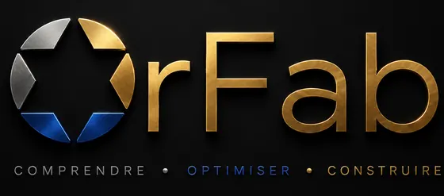

Tout fonctionne… mais partout.
Les informations vivent entre plusieurs outils. Les relances, rappels et envois reposent encore beaucoup sur votre mémoire et vos habitudes.
TableurAgendaMailsMessagesDocuments

DES SOLUTIONS NUMÉRIQUES CONÇUES AUTOUR DE VOTRE ACTIVITÉ
Vous avez construit votre activité, vos habitudes et votre façon de travailler. OrFab part de cette réalité pour concevoir un outil qui s’adapte à vous — pas l’inverse.
Faire une simulation gratuiteLE CONSTAT
Le problème n’est pas que vous travaillez mal. C’est souvent que les outils disponibles n’ont pas été conçus autour de votre façon de travailler.
Les informations vivent entre plusieurs outils. Les relances, rappels et envois reposent encore beaucoup sur votre mémoire et vos habitudes.
Le CRM apporte une structure utile, mais certaines spécificités de votre métier ou de votre organisation restent en dehors de l’outil.
L’outil peut être puissant, mais son fonctionnement est déjà défini. Vous devez parfois adapter vos habitudes au logiciel plutôt que l’inverse.
Un CRM peut stocker et organiser vos informations sans automatiser votre façon de travailler. OrFab pense aussi les relances, rappels, documents, changements d’étape et actions qui peuvent être déclenchés au bon moment.
NOTRE MÉTHODE
Votre organisation n’est pas un problème à corriger. C’est le point de départ de la conception.
Nous échangeons sur votre métier, votre organisation, vos outils et votre façon de travailler.
OrFab analyse votre parcours actuel pour identifier ce qui compte vraiment dans votre quotidien et ce que votre futur outil doit respecter.
Nous vous présentons une première vision du rôle que votre outil peut prendre et définissons ensemble son périmètre.
Après validation, nous précisons les derniers détails puis construisons votre solution autour de votre activité.
Nous testons ensemble, affinons les derniers détails et vous accompagnons dans la prise en main.
UNE SOLUTION AUTOUR DE VOTRE QUOTIDIEN
OrFab ne décide pas à quoi votre outil doit ressembler avant de comprendre comment vous travaillez.
Un outil pensé autour de votre métier, de votre vocabulaire et du fonctionnement que nous avons défini ensemble.
Pas un logiciel à apprivoiser. Un outil conçu pour trouver sa place dans votre activité.
NOS OFFRES
Chaque projet commence par une phase de découverte et de diagnostic. Le tarif final dépend du périmètre retenu, sans abonnement obligatoire.
CRM SUR MESURE
Un CRM conçu autour de votre manière de travailler, pour centraliser l’essentiel et automatiser ce qui peut l’être.
Suivi annuel, petits ajustements, assistance et tarif préférentiel sur les évolutions.
CRM + SITE WEB
Un site et un CRM pensés ensemble pour créer un parcours cohérent, de l’arrivée du prospect jusqu’à son suivi.
Suivi CRM + site, petits ajustements, assistance et tarif préférentiel sur les évolutions.